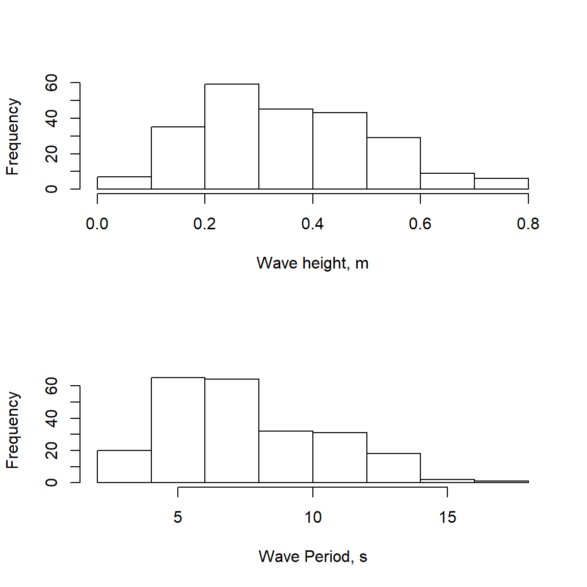
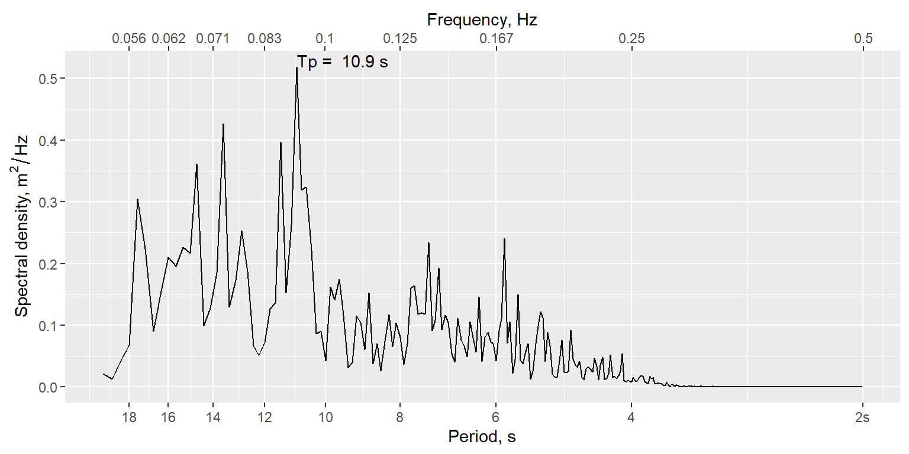

The oceanwaves package is primarily designed to estimate several summary statistics, including significant wave height and period, from a time series of fluctuating sea surface elevation data. The package also provides methods for dealing with data from bottom-mounted pressure transducers, including a function for correcting the pressure signal attenuation that affects sea surface elevations derived from pressure data collected in deeper waters.
This vignette will make use of an included data set wavedata provided with the oceanwaves package. The first portion of the vignette will deal with handling raw pressure data from a bottom-mounted pressure transducer data logger, and the later portion will illustrate how to generate wave height and period estimates once you have a time series of sea surface elevation data.
Begin by installing the package, if not already installed. The oceanwaves package makes use of several other packages that may also need to be installed.
Load the installed package.
Load the provided wavedata data frame.
The loaded data frame contains 7200 records of 4 variables.
options(digits.sec = 3) # print fractional seconds
head(wavedata)
#> DateTime absPressure.mbar swPressure.mbar swDepth.m
#> 277201 2016-08-19 19:15:00 2063.3 1049.3 10.41813
#> 277202 2016-08-19 19:15:00 2065.5 1051.5 10.43998
#> 277203 2016-08-19 19:15:00 2067.8 1053.8 10.46281
#> 277204 2016-08-19 19:15:00 2070.4 1056.4 10.48863
#> 277205 2016-08-19 19:15:01 2071.8 1057.8 10.50253
#> 277206 2016-08-19 19:15:01 2074.6 1060.6 10.53033The columns are:
DateTime - A date and time stamp, in UTC time zone. The time stamps include a fractional seconds value, since the original data were recorded at 4 Hz (4 samples per second).absPressure.mbar - The absolute pressure recorded by the bottom- mounted pressure data logger, in units of millibar. 1 mbar = 100 Pascal. These values include the pressure due to the atmosphere above the sea surface. The sea level pressure due to the atmosphere was 1014 mbar during this deployment, as recorded by a local airport weather station.swPressure.mbar - The pressure due to the height of the seawater column above the bottom-mounted pressure data logger, units of millibar. The values in this column were created by subtracting the sea level air pressure (1014 mbar) from the absolute pressure in absPressure.mbar.swDepth.m - The estimated depth of the seawater column (i.e. sea surface elevation), units of meters. This value is derived from the swPressure.mbar value, as shown below.We’ll start by showing the process of moving from absolute pressure recorded by a bottom-mounted pressure transducer into a time series of sea surface elevations. The first step is to remove the pressure signal due to the atmosphere above the water surface, so that we can get a proper estimate of the height (or depth, depending on your perspective) of the water column. Because air pressure changes with the weather, obtaining a record of local sea level air pressure from a weather station will be useful. For the example data set, we will assume the air pressure was a constant 1014 mbar (as recorded by a local airport weather station), and subtract that value from each of the absolute pressure values in the data set (effectively recreating the values in the swPressure.mbar) column.
This would also be an opportunity to subtract off any offset in the pressure transducer dataset that might be due to other factors, such as drift in the transducer’s baseline value (i.e. if the transducer didn’t read exactly 1014 mbar at the sea surface when the known sea surface air pressure was 1014 mbar).
With the pressure due to the seawater alone calculated, we then want to convert pressure values into estimates of sea surface elevation so that they represent the physical height of the wave crests and troughs passing over the pressure transducer. The conversion from pressure to water column height relies on a few factors, most notably the water column temperature, since the density of the water above the pressure transducer will affect the recorded pressure. There’s also potential effects of salinity (water with more salt in it will be more dense and produce a higher pressure signal also), and even local gravity. Those values can vary through the water column and make for a very complicated calculation of the conversion from pressure to depth. However, the slight differences in calculated sea surface elevation that might come from precisely knowing temperature and salinity throughout the water column when converting pressure to water column height probably aren’t enough to radically bias our estimates of the height of the waves passing over the site during the short window of time typically used to estimated wave statistics (15-30 minutes). For our purposes, we will make use of a conversion function provided by the oce package, which is a dependency of the oceanwaves package and should already be installed. This conversion function, swDepth, assumes a constant temperature and salinity for the water column.
The oce package assumes that the pressure readings are in decibar rather than millibar, so we first need to convert to dbar by dividing mbar by 100.
We then call the swDepth function from the oce package. This function needs the latitude of the sampling site when you supply pressure data. The example data were collected near Los Angeles, California, so we’ll use 33.75\(\circ\) as the latitude. The output depth will be in units of meters.
If your sea surface elevation data were produced by a pressure transducer data logger mounted near the sea floor, rather than a surface buoy, the dynamic pressure signal that the data logger records will be muted to some degree depending on the depth of the data logger and the wave period. As a result, the water surface elevation record from the bottom-mounted sensor will be an underestimate of what the actual height of the water column was, and this underestimate gets worse as the depth of the sensor increases or the wave period gets shorter. The oceanwaves package provides a function prCorr that attempts to correct for this pressure signal attenuation and thus better recreate the actual water surface height fluctuations (a.k.a. waves). See Denny (1988) pg 61 and pgs 296-297 for a relatively simple explanation of the attenuation effect.
The prCorr function needs a few arguments to work. In addition to the vector of sea surface elevations (in meters), you also need to provide the sampling frequency for the data logger (4 Hz in our wavedata example dataset), and the height of the data logger above the sea floor.
Why does that height above the bottom matter? As a wave moves into shallower water, it begins to “feel” the bottom, which is what causes a wave to peak and break. The motion of water particles in the water column will be impacted by the interaction of the wave with the bottom, transitioning from nearly circular orbits near the surface to ellipsoidal orbits near the sea floor. This change in the orbital motion of the water particles affects the dynamic pressure signal recorded by the data logger. But a data logger need not always be mounted directly on the sea floor, such as the case of a data logger strapped to a pier piling in the middle of the water column rather than at the bottom. The degree to which a wave “feels” the seafloor is a function of the wavelength and depth of the water column, and the resulting modification of water particle motions depends on where in the water column a water particle is. For this reason, it is important to know where in the water column the pressure sensor sat, relative to the full depth of the water column at that site. In the case of our example wavedata, the pressure sensor was situated 10 cm above the seafloor, so we provide this value, in meters, as the zpt argument.
We’ll plot the corrected data and the uncorrected data on the same plot to show how the correction changes the estimated sea surface elevations.
plot(swDepthCorrected.m, type = 'l', col = 'red',
ylab = 'Surface elevation, m')
lines(swDepth.m, col = 'blue')
legend('topright',legend=c('Corrected','Raw'), col = c('red','blue'),
lty = 1)As the comparison figure shows, the correction in surface elevation is not a trivial amount, and will substantially impact your estimates of surface wave heights. The prCorr function also has an argument CorrLim with defaults of c(0.05, 0.33) that specifies what range of wave frequencies the correction should be applied to. A frequency of 0.05 equals a wave period of 20 seconds, and a frequency of 0.33 equals a wave period of 3 seconds. These values are given as reasonable defaults for ocean waves, but you may have cause to change them depending on the circumstances of your pressure sensor data logger deployment. For instance, pressure sensors deployed in deeper water will not adequately register high frequency wind waves, so it may be desirable to change the upper limit from 0.33 Hz to a smaller value (= longer period).
You may also notice the declining trend in the mean elevation of the sea surface. This is due to the falling tide during this collection interval. The pressure attenuation correction in prCorr() removes this trend when it estimates the mean water depth for purposes of the correction, and the calculations of wave statistics below also remove this trend before attempting to calculate the wave heights and periods.
Now we can move on to generating summary statistics for the sea surface elevation data. We will use two different approaches to arrive at roughly the same end results: estimates of significant wave height and wave period.
A zero-crossing algorithm for determining wave height and wave length should be relatively intuitive. If you want to describe the height of waves, and how often they come by, you can just establish what the still water level would be, and then measure the height and length of each wave based on when (and how high) the water level rises above the still water level (the start of a wave), then drops below, and finally rises above the still water level again (the end of the wave, and start of the next wave). If you start each wave as it rises above the still water level, this is an ‘up-crossing’ algorithm. Similarly, you could do the same routine, but start counting each wave when the water drops below the still water level instead, which is referred to as a ‘down-crossing’ algorithm. Using a zero-crossing algorithm (both up-crossing and down-crossing versions) is also referred to as wave-by-wave analysis or wave train analysis.
The oceanwaves package implements an down-crossing algorithm in the function waveStatsZC, which should be supplied with a vector of water surface heights and the sampling frequency of the data (4 Hz for our example wavedata).
zerocrossStats = waveStatsZC(swDepthCorrected.m, Fs = 4)
zerocrossStats
#> $Hsig
#> [1] 0.5313988
#>
#> $Hmean
#> [1] 0.3502191
#>
#> $H10
#> [1] 0.6438722
#>
#> $Hmax
#> [1] 0.7724476
#>
#> $Tmean
#> [1] 7.672747
#>
#> $Tsig
#> [1] 9.75641Multiple results are generated by waveStatsZC:
Hsig - Mean of the highest 1/3 of waves in the data set. Units = same as input surface heights.
Hmean - Overall mean wave height, for all waves (bigger than threshold if the threshold argument is used).
H10 - Mean height of the upper 10% of all waves.
Hmax - Maximum wave height in the input data.
Tmean - Mean period of all waves (bigger than threshold if the threshold argument is used). Units = seconds.
Tsig - Mean period of Hsig (highest 1/3 of waves).
The other option for calculating wave statistics is through spectral analysis, transforming the wave height data from the time domain to the frequency domain. Spectral analysis is perhaps more commonly used these days, particularly onboard surface wave buoys to quickly distill wave records down into manageable summary values for transmission over limited bandwidth satellite or cellular connections. Spectral analysis produces a slightly different set of summary statistics as compared to the zero-crossing algorithm. In the oceanwaves package, we use the waveStatsSP function to carry out a spectral analysis of the surface height data.
spectralStats = waveStatsSP(swDepthCorrected.m, Fs = 4)
spectralStats
#> $h
#> [1] 10.45144
#>
#> $Hm0
#> [1] 0.56511
#>
#> $Tp
#> [1] 10.90909
#>
#> $m0
#> [1] 0.01995933
#>
#> $T_0_1
#> [1] 8.288296
#>
#> $T_0_2
#> [1] 7.598222
#>
#> $EPS2
#> [1] 0.4357626
#>
#> $EPS4
#> [1] 0.6597814The most relevant output from waveStatsSP is probably:
h - Average water depth. Same units as input surface heights (typically meters).
Hm0 - Significant wave height based on spectral moment 0. Same units as input surface heights (typically meters). This is approximately equal to the average of the highest 1/3 of the waves, as reported by the Hsig output from the waveStatsZC function.
Tp - Peak period, calculated from the frequency where the spectrum is maximal. Units of seconds. This is not directly comparable to the Tmean period produced by the waveStatsZC function.
m0 - Estimated variance of time series (moment 0).
T_0_1 - Average period \(m0/m1\), units seconds. Follows National Data Buoy Center’s method for calculating average period (APD). This is comparable to Tmean produced by the waveStatsZC function, but will not necessarily be equal.
T_0_2 - Average period \((m0/m2)^{0.5}\), units seconds. Follows Scripps Institute of Oceanography’s method for calculating average period (APD) for their buoys. This is also comparable to Tmean produced by the waveStatsZC function, but will not necessarily be equal.
Both wave statistics also have built-in plots to show some information about the results. The zero-crossing function outputs frequency histograms of the number of waves in height bins and in period bins.

The spectral analysis function generates a spectrum, with the peak period labeled. The significant wave height is not easily visualized from this method.

Demirbilek, Z. and C.L. Vincent (2008). Water Wave Mechanics. Chapter 1 in Coastal Engineering Manual EM 1110-2-1100 Part 2. Vicksburg, MS, US Army Research and Development Center
Denny, M. W. (1988). Biology and Mechanics of the Wave-Swept Environment. Princeton University Press, Princeton, New Jersey. 329 pgs. ISBN 0-691-08487-4
Driver, J.S. (1980). A guide to sea wave recording. Institute of Oceanographic Sciences, Report 103, National Environmental Research Council, 51 pgs